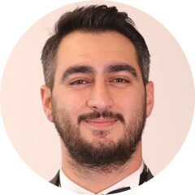

|  |
UFUK EKEN
Maritime Field Technician from Marinspect Safety BV.
Do you want to CV? Click here.
|
I am 33 years old. I was born in Turkey. I got married in 2020 April. I have
a one daughter. I work already global company in Netherlands. Company name is
Marinspect Safety & Riggin B.V(Contractual)(Not Citizenship in Netherlands). I am working as safety service
technician.Work hard and unfavorable conditions in Turkey.
Correspondingly closed. I aim for more advanced levels. I always attach
importance to development and strive for it. My goal is to study and work in
better conditions and have a more peaceful life with my wife. I think I will
work better and develop more in your country and company. I will work hard
for this. Thank you in advance for my thoughts and the importance you will
try to contact me.
Work Experience
Besiktas Marine Co.Ltd.Sti.
- Breathing Air
- Liferaft
- Gas Detection Device
- Fire Extinguisher
- Life Saving Appliances
- CO2 Systems
- Air Quality
- Immmersion Suits
- Fireman Outfits
- Pilot ladders,Emberkation Ladders
Education
| Dates |
Education |
| 2006-2010 |
Istanbul Pendik High School |
| 2010-2014 |
Balıkesir University - University Degree |
| 05/2018 |
Istanbul Business Institute |
- Total Quality Management
- Quality Management System Documantation Training
- Quality Management System Basic Training
| 05/2019 |
Turkish Standart Institute Personel Certification Center |
- Portable & Wheeled Fire Extinguishers inspection,maintenance and refilling personel
| 03/2019 |
Lalizas Life Saving Appliances Greece |
- Lalizas Liferafts
- Lalizas Lifejackets
- Lalizas EEBD 'Rescue Air-L15'
- Lalizas EEBD 'Escape 15'
- Lalizas SOLAS/MED Self Contained Breathing Apparatus
- Lalizas Immersion Suits Insulated 'NEPTUNE'
Languages
- English - C1
- Turkish - Native
Skills
| Live Saving Appliances Service |
⭐⭐⭐⭐ |
| FFA Service |
⭐⭐⭐⭐⭐ |
| Gas Detectors Calibration |
⭐⭐⭐⭐⭐ |
| Liferaft Service |
⭐⭐⭐⭐⭐ |
Contact Me
|